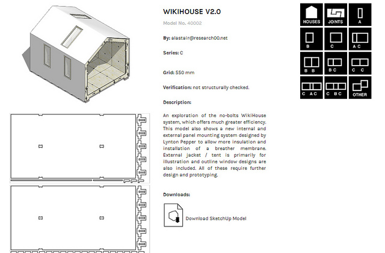

2013-07-22
「一個令人感到不適的事實是，幾乎所有我們今日稱之為「建築」的，都是為了世界人口中最有錢的百分之一所做的商業設計。」--Alastair Parvin
Wikihouse的創辦人Alastair Parvin，是英國倫敦「00:/」建築合作團隊的一員，自2011年起開始這個計劃。
Alastair Parvin的目的是想要建立一個有利於災後重建、能簡單迅速上手的建築模型，並且讓這樣的建築設計進入公共領域，使所有人都能免費使用，迅速建立出屬於在地的緊急避難所。他稱此作「生產的民主化」，從普遍讓全民掌握「消費」能力進而為「製造」能力，藉由降低蓋房子的門檻，使房子能真正的為「全民」所用，不再由少數1%的人所專享。
Wikihouse所堅守的10個設計原則中，處處彰顯開放、分享、共用的精神。像是「像狐狸一樣懶惰」－要像狐狸一樣「善用他人已有的解決之道、並給他們好處」才能既聰明又省力；或是「比起蛋糕和餅乾，食譜更容易運送」－給別人設計圖比起成品更容易。
而為了讓這些設計能更為公眾普遍適用，建築的材料和成分的設計要成本低廉、可回收、低排碳，架構不需要太多技巧訓練就能組成且有容錯設計，房子可以輕易拆除並不需要動力工具就能組裝，在能源運用上要很有效率，且能確保使用者生存在其中能兼顧安全、心理及生理健康。
圖/授權資訊 Wikihouse， 姓名標示─相同方式分享。
Wikihouse的成品是開放建築設計套裝，垂直整併三個面相—硬體、設計軟體和分享合作的網路平台。人們從網路上下載檔案，利用外掛將google SketchUp所做的3D模型以CNC雕刻機印成2D切割檔，最後像是拼圖般的利用三夾板或其他當地適合的材料加以敲打拼湊，就能組裝出屬於自己的房子。
這些檔案在創用CC「姓名標示─相同方式分享」的授權下可以免費下載，只要標示出作品的作者，並保證使用或改製之後的成品也會以相同授權方式分享，那就可以盡情利用這些建築素材。
在組裝此套裝時，不需要使用電動工具，只要多一點志工就能快速組成房屋架構，出乎意料的是，組裝過程是一個很好的社交活動，不少參與者都從中獲得DIY的樂趣。
緊接著wikihouse計畫，出現了另一個「open desk」計畫，讓蓋好的房子有更完整的配置。網站上有三種用途的桌子可以選擇 : 工作用途、會議用途、非正式用途，使用者可以透過網站下載經過創用CC「姓名標示─非商業性」授權的藍圖，於在地利用當地素材數位列印並組裝。另外，網站上也可以看到這些桌子的實踐案例，同時讓人了解有哪些地方有提供數位製造的工具。
唯一美中不足的是，雖然CNC雕刻機已經越來越普遍，但是多數仍然很貴，因此對於社會弱勢來說還不算那麼的友善，需要有更多合作迴響，方能達成這個平台的終極期望。
註 :DickReynoldsDesign.com同樣也有提供用google sketch繪製的椅子模型，採創用CC「姓名標示─非商業性─相同方式分享」授權。AtFAB furniture objects則提供桌、椅、床等的家具藍圖，可以下載後自行3D列印組裝，同樣採用創用CC「姓名標示─非商業性─相同方式分享」授權。
備註：
google SketchUp連結失效